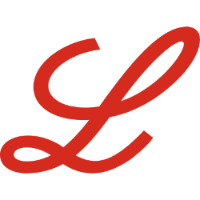

ผ่าธุรกิจ LLY (Eli Lilly) — ยาฉีดลดน้ำหนักที่กลายเป็นเครื่องจักรเงิน

ในไม่กี่ปี Eli Lilly กลายเป็นบริษัทยาที่มีค่ามากที่สุดในโลก เพราะยา 2 ตัว — Mounjaro (เบาหวาน) และ Zepbound (โรคอ้วน) — ที่ทำงานบน ฮอร์โมนชื่อ GLP-1 บทนี้อธิบายแบบเห็นภาพว่ายาพวกนี้ทำงานยังไง คูเมืองอยู่ตรงไหน (สปอยล์: ไม่ใช่แค่สิทธิบัตร) และจุดเปราะที่ใหญ่ที่สุดคืออะไร
ตัวเลขอ้างอิงงบ FY2025 (10-K) และข้อมูล Q1 2026 ที่เผยแพร่ ควรตรวจสอบกับ filing ล่าสุดก่อนใช้ตัดสินใจ เป็นการวิเคราะห์เพื่อการศึกษา ไม่ใช่คำแนะนำซื้อขาย — และไม่ใช่คำแนะนำทางการแพทย์
1. ธุรกิจนี้หาเงินจากอะไร
Eli Lilly (ก่อตั้งปี 1876) ค้นคว้า ผลิต และขายยาใน ~90 ประเทศ แต่ ณ ตอนนี้รายได้ส่วนใหญ่มาจาก ยากลุ่ม incretin — Mounjaro + Zepbound รวมกัน ~56% ของรายได้ปี 2025 จุดที่คนมักเข้าใจผิด: ลูกค้าที่จ่ายเงินตรงให้ Lilly ไม่ใช่ผู้ป่วย แต่เป็น ผู้กระจายยารายใหญ่ (McKesson, Cencora, Cardinal Health — แต่ละรายเกิน 10% ของรายได้) และ payer/PBM ที่อยู่เบื้องหลัง
แล้วยาพวกนี้ทำงานยังไงถึงคุมได้ทั้งน้ำหนักและน้ำตาล? ดูแบบเห็นภาพ:
ตัวยา (tirzepatide) เลียนแบบฮอร์โมนในลำไส้ ไปกระตุ้น receptor ที่ทำให้ รู้สึกอิ่มเร็ว/นานขึ้น และช่วย ควบคุมน้ำตาล — ผลคือทั้งลดน้ำหนัก และคุมเบาหวานในยาตัวเดียว นี่คือเหตุผลที่ดีมานด์ระเบิด
2. คูเมือง: ไม่ใช่แค่สิทธิบัตร — แต่คือ "ทำได้จริงที่สเกล"
หลายคนคิดว่าคูเมืองยาคือสิทธิบัตรอย่างเดียว แต่กับ GLP-1 คูเมืองที่สำคัญพอๆ กันคือ การผลิต peptide ที่สเกลใหญ่ได้จริง ซึ่งยากและใช้เงินทุนมหาศาล:
ตอนนี้ demand > supply Lilly จึงทุ่ม capex มหาศาล (capex โตจาก $5.1B ปี 2024 → $7.8B ปี 2025) สร้างโรงงานเพิ่ม — คนที่ผลิตได้ก่อนและมากกว่าได้เปรียบ formulary และส่วนแบ่งตลาด นี่คือ Cornered Resource + Process Power แบบ Helmer ที่คู่แข่งลอกในระยะสั้นยาก
3. เครื่องยนต์ R&D: pipeline สำคัญกว่ายาตัวเดียว
ยา 1 ตัวกว่าจะถึงตลาดต้องผ่านด่านคัดที่โหดมาก — และนี่คือเหตุผลที่บริษัทยาที่ดีต้องมี pipeline ไม่ใช่พึ่งยาฮิตตัวเดียว:
ล่าสุด Lilly เพิ่งได้อนุมัติ orforglipron — GLP-1 ชนิด เม็ด ตัวแรกสำหรับโรคอ้วน (เม.ย. 2026) ซึ่งสำคัญมาก เพราะยาเม็ดเข้าถึงคนไข้ได้กว้างกว่ายาฉีด และยังมี trial ของ tirzepatide ใน NASH, heart failure, sleep apnea ที่อาจเปิดตลาดใหม่อีก
4. Runway: คลื่นโรคอ้วนเพิ่งเริ่ม
ตลาด GLP-1 ยังอยู่ช่วง early adoption — ประชากรโรคอ้วน + เบาหวาน + กลุ่มเสี่ยงหัวใจ มหาศาล แต่ penetration ยังต่ำ ทุก % ที่เพิ่มขึ้นแปลว่ารายได้ก้อนใหญ่ และเพราะ Lilly ยัง supply-constrained อยู่ การลงทุนโรงงานที่กำลัง ramp ปี 2026-2028 จึงต่อยอดได้โดยตรง
5. ตัวเลขบอกอะไร
- รายได้โตผิดปกติสำหรับบริษัทยา — $34.1B (2023) → $45.0B (2024, +32%) → $65.2B (2025, +45%); Q1 2026 = $19.8B (+56% YoY) และ guidance FY2026 ถูกปรับขึ้นเป็น $82-85B
- Margin ระดับสูงและดีขึ้นต่อเนื่อง — gross margin 79.2% → 81.3% → 83.0%; net margin 2025 = 31.7% ($20.6B) จาก product mix incretin ที่ margin สูง
- ลงทุนหนักเพื่อโต — แต่ก่อหนี้เพิ่ม — capex พุ่งเพื่อ ramp การผลิต, total debt ขึ้นเป็น $42.5B (2025) จากการออกพันธบัตร fund โรงงาน; FCF หลัง capex เหลือ ~$6.0B (ต้องจับตาถ้า incretin ชะลอ)
ตัวเลขจากงบที่เผยแพร่ — โฟกัสที่ "ทำไมมันโตและคูเมืองอยู่ตรงไหน" มากกว่ามูลค่า/ราคาเป้า (บทนี้ไม่ทำ valuation; คนละกรอบกับการตัดสินใจซื้อ)
6. Bull Case
- คูเมือง IP + การผลิต — สิทธิบัตร Mounjaro/Zepbound ถึงปี 2036-40 + process power การผลิต peptide ที่ลอกยาก ทำให้คู่แข่งตัดราคาในระยะสั้น-กลางได้ยาก
- ตลาดที่กำลังระเบิดและยัง penetrate ต่ำ — Lilly ที่ supply-constrained ได้ประโยชน์ตรง จาก capex ที่กำลัง ramp
- Pipeline ขยายออกนอก incretin — orforglipron (ยาเม็ด) กระจาย formulation risk + indication ใหม่ (NASH/heart failure/sleep apnea) เปิด TAM เพิ่ม
7. Bear Case / จุดเปราะ
แม้ธุรกิจดีมาก แต่ต้องมองด้านมืดให้ชัด — จุดเปราะมาจาก 2 เรื่องใหญ่ เริ่มจากธรรมชาติของยาทุกตัว:
และความเสี่ยงเชิงโครงสร้างของพอร์ตยาที่กระจุก:
- กระจุกสุดๆ — incretin = 56% ของรายได้ ($36.5B จาก $65.2B) ถ้าสะดุดด้วยเหตุใด (ผลข้างเคียง, แข่งราคา, supply) ผลกระทบรุนแรง
- การแข่งขันที่ดุ — Novo Nordisk แข่งตรง และคลื่นยาเม็ด/รุ่นใหม่กำลังมา ความได้เปรียบ first-mover ไม่ถาวร
- แรงกดราคา — payer/PBM และนโยบาย (เช่น Medicare price negotiation/IRA) กดราคาสุทธิได้ในระยะยาว แม้ volume ยังโต
8. Kill Conditions — อะไรจะทำให้ thesis พัง
วินัยสำคัญ: ต้องรู้ก่อนว่า "เหตุการณ์แบบไหนจะบอกว่าผมคิดผิด" สำหรับ LLY คือ:
- เสียส่วนแบ่งตลาด incretin ให้คู่แข่งอย่างเป็นระบบ (script share/volume ลดต่อเนื่อง) ทั้งที่ supply ไม่ใช่ข้อจำกัดแล้ว → first-mover moat กำลังเสื่อม
- ราคาสุทธิ (net price) ถูกกดลงแรงจาก payer/IRA จน margin หดชัด ทั้งที่ volume ยังโต → เศรษฐศาสตร์ของแฟรนไชส์เปลี่ยน
- Pipeline สำคัญล้มเหลว (เช่น orforglipron หรือ indication ใหม่ fail trial ใหญ่) ขณะที่ยาหลักเริ่มเข้าใกล้ patent cliff → ลู่วิ่ง R&D สะดุด ไม่มีตัวมาแทน
สรุป
LLY เป็นตัวอย่างของธุรกิจยาที่คูเมืองไม่ได้อยู่ที่สิทธิบัตรอย่างเดียว แต่อยู่ที่ ความสามารถผลิต peptide ที่สเกล + pipeline + ตลาดที่เพิ่งเริ่มโต ตัวเลขสวยมาก (รายได้ +45%, margin 83%) แต่จุดเปราะที่ใหญ่ที่สุดคือ การกระจุกตัวใน incretin (56%) บวก การแข่งขันและแรงกดราคา และเงา patent cliff ที่รออยู่ปลายทาง ใครจะถือต้องตอบให้ได้ว่า ถ้าส่วนแบ่งเริ่มหลุดหรือราคาถูกกด จะทำยังไง